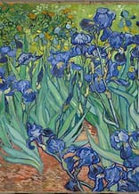
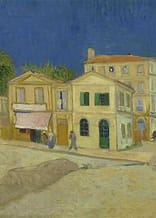

Similar works of Vincent van Gogh

The Potato Eaters

Irises

Author

*The Starry Night* was painted during the day in Van Gogh's ground-floor studio, it is inaccurate to say it was painted purely from memory. The view depicted in the painting is identified as the one from his bedroom window, facing east, which Van Gogh painted in various forms at least twenty-one times. He mentioned in a letter to his brother, Theo, around May 1889 that he could see an enclosed wheat field from his window, where he would watch the sunrise each morning. Van Gogh created several variations of this view under different lighting conditions, weather, and times of day. Though the hospital staff didn't allow him to paint in his bedroom, he sketched the scenes using ink and charcoal, later refining them into full paintings. The consistent feature across these works is the diagonal line representing the low rolling hills of the Alpilles mountains and the cypress trees, which Van Gogh exaggerated in several paintings, notably in *The Starry Night*.
*The Starry Night* is the only nocturne in the series of views from his bedroom window. Van Gogh's depiction of the night sky, particularly the prominent "morning star" near the cypress tree, is believed to represent Venus, which was visible at dawn in Provence during spring 1889. The Moon in the painting is stylized, as it was not astronomically accurate for the phase of the Moon at that time. The village depicted in the painting was not visible from Van Gogh's room and is based on a sketch made from a hillside above Saint-Rémy. This village scene includes a steeple that has been noted as more Dutch than Provençal, reflecting Van Gogh's earlier works from his time in Nuenen. The fusion of various landscapes and memories from different periods in his life is evident in this iconic work.